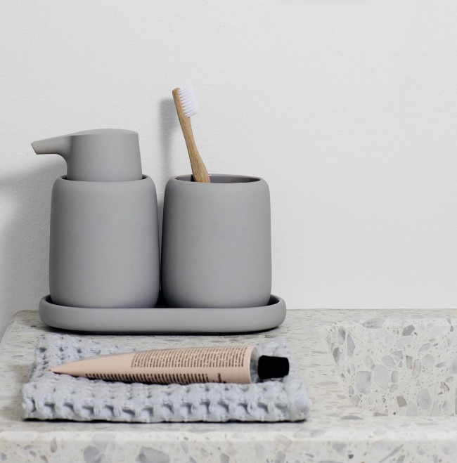

Tualeto dubenių rūšys nuotrauka iš tikro tualeto patalpų - Santechnika October
2020.10.29 08:29
Drenažas Gutter Santechnika Septikai Vamzdžiai Drenažas Gutter Santechnika Septikai Vamzdžiai
Tualeto dubenių rūšys nuotrauka iš tikro tualeto patalpų
SantechnikaPirmasis tualetas pasaulyje su rezervuaru pasirodė Anglijos karaliene 16 a. Pabaigoje. Vystymą trukdė gerai suplanuotos drenažo ir kanalizacijos sistemos trūkumas. Tolesnė tualeto dubenėlio plėtra tęsėsi po maždaug 150 metų, "Twyford" pavadino savo tualeto išradimų kopiją "vienybė" vertimo skambesyje kaip "Unitas".
Ir mūsų laikais, unitas yra didžiulė įvairovė ir yra suskirstytos į rūšis pagal dubenį, pagal tvirtinimo būdą, drenažą ir net medžiagos. Šiame straipsnyje norėjau papasakoti apie tualeto indų tipus.
Pagal GOST įrengtas tualeto indas turi atitikti šiuos parametrus:
Įrenginio pjedestalo aukštis 40 cm; Maksimali apkrova yra 200 kg; Vandens išleidimo tūris yra ne mažesnis kaip 5 litrai.Šis parametrų sąrašas yra kiekvieno akredituoto gamintojo kodas.
Veislės
Sanitarinio prietaiso pasirinkimas priklauso nuo dubens tipo, medžiagos rūšies, konstrukcijos tipo ir naudojimo sąlygų.
Dubuo tipai
Dizaino įvairovę sudaro 3 pagrindiniai tipai:
Vandens piltuvėlio formos dubenėliui būdingos padidintos higienos savybės. Butelio centre esančio piltuvo vieta užtikrina greitą atliekų šalinimą. Vienintelis trūkumas yra sprogimų atsiradimas.
Padėklas, pagamintas plokštelės pavidalu, turi atliekų kaupimo savybę, prieš srovę tiekiant. Ši rūšis laikoma sena, tačiau ji netaikoma spiečiams. Manoma, kad dubenėlių dubenys yra nedidelės higienos, pastaraisiais metais šios priežastys yra mažiau paplitusios.
Dažniausiai forma taurė yra įrengta speciali iškyša (skydelis), kad neatmetama purslų gamybą, ir specialus šališkumo akimirksniu pašalina atliekas.
Be patogaus naudojimo, dubuo taip pat yra atsakingas už paraudimą ir kuo mažesnį druskos išaugimą. Dėl to yra simbiozė tarp dubens konstrukcijos ir purkštukų tipo.
Poveikio rūšys
Skalavimo tipas priklauso nuo vandens srove krypties, pavyzdžiui, tiesioginio kaskados ar apskrito. Kaip ir bet kuris dizainas, jie turi privalumus ir trūkumus.
Cascade Washout
Kaskadinis praplovimas atliekamas tiekiant vandenį iš vienos pusės. Kažkas panašus į krioklį. Dizainas yra patvarus, tačiau užtikrina tik vienos pusės dubenėlį, priešinga pusė išlieka beveik nepaliesta. Dėl šio sprendimo, tualeto kaina nėra didelė. Trūkumai taip pat apima aukšto lygio triukšmą, kai paraudimas ir purškimas.
Apskritimo paraudimas yra daug sudėtingesnis. Vandens srovė tiekiama iš dviejų pusių ir sklendės dviem skirtingais kampais iki apatinio krašto. Dėl šio klastingo dizaino vandens srautas veikia apie 93% paviršiaus. Išmestos triukšmo praktiškai nėra girdimas.
Labai retai galima rasti tam tikrą vandenį, kuris pirmą kartą užpildo vandenį, po kurio staiga paleidžiamas lygumas. Ši parinktis padengia 100% dubens paviršiaus. Vienas iš trūkumų gali būti vadinamas padidėjusiu vandens suvartojimu, jis pasiekia 8,5 litrus.
Vidutinis vandens kiekis, išleidžiamas per praustuvą, neturėtų viršyti daugiau kaip 5,5 litro, tačiau į rezervuarą įdėtos specialios dvipakopės drenažo sistemos. Jie leidžia jums padalyti srautą ir sumažinti vandens kiekį, išleistą iki dviejų kartų.
Kanalizacijos sistemos veislės
Klasifikacija apima tris tipus - vertikalią, horizontalią ir įstrižą alkūnę.
Pasvirimas skiriasi nuo horizontalios, kaip jūs suprantate, nuolydžio kampas. Horizontalus kampas 180 laipsnių kampu ir pasviręs 145 laipsnių kampas (išsikišęs žemyn), atsižvelgiant į kanalizacijos išleidimo angą. Šio tipo drenažo struktūros naudojimas per pastaruosius keletą metų tapo labai populiarus. Visame vynyje yra nuotekų vamzdžiai, sumontuoti betono perdengimo plokštumoje, kurie su veržiklių pagalba prijungiami prie vertikaliųjų stovų.
Taip pat verta paminėti, kad ryšys yra įstrižos tipas, nenaudojamas horizontalus švinas, be universalaus perėjimo.
Nuotekų kanalizacijos sistema
Kitoje įstrižai nutekėjimo, buvo plačiai taikomi montavimo kanalizacijos sistemas surenkamų namų (Chruščiovo), kuri yra aktyviai kurti nuo 20 amžiaus 70-ųjų pradžioje yra pasirengusi.
Horizontali kanalizacijos sistema
Visose šiuolaikinėse sistemose naudojamos tualeto indai su horizontaliu išėjimu.
Vertikali nuotekų sistema
Praėjusio šimtmečio pradžios pastatams buvo populiari vertikalių alkūnių.
Šiuolaikinės statybos pasaulyje vis monopolizuoja imtis vertikalios vingiu, kurie gali būti susiję su komunikacijos savybių, kurios leidžia prijungti tualetai be pritvirtinti prie sienos. Dėl to šis metodas neužkerta kelio kambario viduryje įrengti tualetą, o nuotekų kriauklė grindyse.
Įvairių tualeto dubenių medžiagos
Pirmasis pripažintas tualetas, kuris 1884 m. Buvo apdovanotas auksu Londone, buvo tik keramikos dirbinys. Nuo to laiko fajantai buvo naudojami daugiau nei 133 metus, tačiau jų įvairovė padidėjo ir fajansas nėra taip paprastas.
Fajansas
Fitingo dubenys skiriasi dėl silpno mechaninio atsparumo pažeidimams ir didelės poringumo, todėl šiek tiek sunkiau išvalyti modelį. Fajansas mūsų gamyboje yra sumažintas, priežastis yra silpnumas. Naujos technologijos gali pagerinti šią rūšį, tačiau kitos medžiagos, kurios taip pat gamina tualetinius dubenius, yra daug geresnės.
Porcelianas
Porcelianiniai tualetai turi išorines charakteristikas, tokias kaip fajansas, tačiau saugumas yra gerokai didesnis. Šių modelių valymas yra lengvesnis, o vienintelis trūkumas yra kaina, tačiau dėl padidėjusių gamybos sąnaudų. Keraminės tualeto indai turi mažesnę rinkos vertę, tačiau jie turi mažesnį glazūros sluoksnį, jie sveria daugiau ir yra mažiau patvarūs.
Metalas
Čia taip pat yra metalo santechnikos gaminių klasikiniai, plieno ir ketaus gaminiai. Tai geriausia įdiegti tokius modelius viešosiose įstaigose (geležinkelio stotyse, valgyklose, klubuose, kino teatruose ar prekybos centruose). Plieniniai modeliai yra vertinami dėl to, kad jie būtų atsparesni mechaniniams pažeidimams ir lengviau valyti, tačiau šie privalumai atsispindi padidėjusiomis sąnaudomis. Ketaus dubenys jau nėra naudojamos, nes jie daug sveria, o emalio danga lengvai plaukioja.
Stiklas ir akmuo
Šiuolaikinių mėgėjų ir čia buvo prieš visą planetą. Pažvelkite į fotografijas iš stiklo ar akmens tualeto dubenėlių, jie turi labai ekstravagantišką išvaizdą. Tokių modelių kaina yra labai didelė, tačiau jie negali pasigirti jėga. Nedidelę jėgos galią galima kompensuoti taikant dirbtinį akmenį, kuris išvaizda ir liestis visiškai nesiskiria nuo natūralių komponentų.
Plastiko
Šiuolaikinė gamyba išmoko pagaminti sustiprintus akrilinius tualetinius dubenėlius. Tokie modeliai yra labai patvarūs, lengvai valomi ir užima lyderio pozicijas higienos srityje. Tokių modelių minusai yra deformacijos, kurias gali sukelti mechaniniai pažeidimai arba padidėjusi temperatūra.
Tvirtinimo būdai
Tualeto dubenėlių priedai yra suskirstyti į kabines ir lauko (taip pat yra ir stumdomi modeliai).
Grindų rūšys
Ant grindų įrengti tualetai yra mažesni nei pakabos modeliai, juos lengva montuoti. Grindų gaminiai mūsų laikais turėtų būti įrengti tik dideliuose vonios kambariuose. Tvirtinimas atliekamas varžtais, kurie eina į komplektą, ir laiku užima 15 minučių.
Ateityje išardyti tokį tualetą bus galima labai lengvai, nepakenkiant grindų dangai. Mažo dydžio vonios kambariuose geriau naudoti slydimo variantus. Taip pat pažvelkite į kampinius tualeto indų tipus, jie idealiai tinka mažiems vonios kambariams.
Sustabdytas vaizdas
Sustabdytos rūšys yra tiesioginės paskirties vietos mažiems vonios kambariams. Tvirtinimas, kaip teigia gamintojai, gali atlaikyti iki 450 kg. Didžiausias pliusas yra didesnis plotas.
Pakabinamų dubenų tvirtinimas yra blokas arba rėmo pavidalas. Rėmas leis jums užfiksuoti tiek ant sienos, tiek ant grindų, tokiu būdu tvirtinant sieną. Prieš tualetą turite išmesti vandenį ir kanalizaciją. Bloko metodas atrodo kaip blokinis rėmas ir pritvirtintas prie sienos. Montavimo varžtų ilgis yra iki 15 cm. Galite įrašyti kambarį tik tuo atveju, jei montuojamas netikras skydas.
Talpyklos tvirtinimo būdai
Santechnikos rinkoje galite pamatyti keletą galimybių nutekėjams.
Atskiras modelis
Atskiras vaizdas reiškia, kad drenažo rezervuaro tvirtinimas pakabinamas tam tikru atstumu. Tualeto indo ir talpyklos jungtys yra pagamintos naudojant metalinį arba plastikinį vamzdį. Vandentiekio sistema yra įdiegta naudojant svirtį, kuris suteikia komandai nutekėti, naudojant grandinę, virvę ar bet kurią kitą rūšį.
Ši rūšis buvo sukurta daugiau nei prieš 100 metų, o dėl didelės talpyklos tvirtinimo vandens šūvio greitis yra daug didesnis. Rezultatas gali būti laikomas kokybiniu nuplovimu, skirtingai nuo kitų rūšių.
Bendras modelis
Mūsų šiuolaikinis tualeto dubenėlio modelis, kuris ant dubenėlio reiškia vietą po drenažo rezervuaru. Šis tipo tvirtinimas yra labai įprastas, jis turi paprastą tvirtinimo tipą ir nereikalauja papildomų išlaidų vandens tiekimui. Be to, nebūtina, kad bakas būtų toli nuo sienos, bet taip pat galėtų naudoti sienas kaip pamatą.
Monobloko modelis
Tokie tipai, kuriuos galbūt matėte, bet jie retai randami. Patys tualetai yra pritvirtinti, taip pat įprastas modelis, tik dabar tvirtinimo elementų pagalba jums nereikės pritvirtinti pačios talpyklos. Nedelsiant suvyniokite tualetą, neleidžia nutekėti, o tai atsitiks, atsitinka po talpykla.
Paslėptas modelis
Tokio pobūdžio populiarumas ir labai dažnai naudojamas kuriant originalius dizaino projektus. Paslėptas drenažo rezervuaro įrengimo modelis leidžia jį montuoti sienoje, paslėptą už suklastotos sienelės, tuo pačiu padidinant erdvę vonioje. Šio modifikavimo drenažo valdymas atliekamas naudojant mygtukus, kurie įrengiami ant klaidingos sienos paviršiaus naudojant specialius pratęsimus.
Tualeto indai be talpyklos
Įrenginių vandentiekio rinkos pažanga, skirta viešųjų tualetų kryptims, sukūrė tualeto indą. Tokių prietaisų nutekėjimas tiesiogiai atliekamas iš dujotiekio naudojant rankinį arba automatinį vožtuvą.
"Smart" tualetai
Vadinamieji protingi tualetiniai dubenys gavo savo kryptį. Jie skiriasi dėl papildomų funkcijų, kurios iki šiol turi tokį sąrašą:
Įmontuotas bidė arba bideto dušas; Automatinis nutekėjimas su jutikliais; Šildymas; Muzika; Sveikatos priežiūra.Papildomos funkcijos
Iki šiol populiarėja modeliai, turintys papildomų funkcijų, tokių kaip bidės. Pats bidės įtaisas yra ant dangčio. Tačiau tai nepadėjo ir dabar jūs galite pamatyti modelius su elektroninėmis valdymo plokštėmis, kurios kontroliuoja bidė vandens temperatūrą, sėdynės temperatūrą, vandens slėgį bidē, muziką ir dar daugiau.
Rinkos naujovė yra anti-splash funkcija. Kažkas panašaus jau buvo padaryta, turėjo skydo pavadinimą. Dabar dubenėlio forma paėmė siaurą piltuvą, dėl kurio visai nėra jokių purslų. Tokių dubenėlių išleidimo anga yra asimetriška, o gamybos sąnaudos nekeičiamos.
Labiausiai neįprasti tualetiniai dubenys
Kai kuriems produktams tualeto indai buvo didesni negu versle. Vis daugiau galite pasipiktinti dėl unikalių ir neįprastų pasirinkimų, skirtų turtingam vartotojui.
Įsivaizduokite, kad tai nėra mitas, o tikrovė:
Mobilus tualetas, kuris yra portfelyje; Didžiulis tualetas; Romantiškas tualetinis dubuo dviems; WC su įmontuotu prefiksu; Tualetinis dubenis, panašus į animaciją; Tualeto dubuo su brangakmeniais.Tualeto dubenio pasirinkimas tampa vis sunkesnis kasmet dėl padidėjusių žmonių poreikių. Mes jau nebepriklauso įprastai naudojamų tipų, mes darome viską, kas įmanoma. Šiame ir visame žmoge, šioje ir visoje begalybės vystymosi esmei. Paklausa vis daugiau ir daugiau nuo tavęs. Pasidalykite savo nuomone komentaruose, mes mylime jus!
Koks tualeto dubenio leidimas pasirinkti?
Su tualeto kambario išdėstymu savininkas neturi svarbesnio uždavinio nei pasirinkdamas tualeto dubenį. Tai ypač nustebino tas žmogus, kuris pastatė savo namus, o dabar sprendžia kanalizacijos ir su tuo susijusius klausimus. Tualeto alyvos pasirinkimas tiesiogiai priklauso nuo pastato kanalizacijos sistemos konstrukcijos.
Aprašymas
Tualetas paprastai yra sanitarinis vienetas, kurį sudaro du pagrindiniai elementai:
dubuo, kuris atlieka žmogaus gyvybės produktų rinkimo ir šalinimo funkcijas; Nuotekų bakas, kuriame kaupiamas ir saugomas plovimo vandens rezervas.Tualetinio puodo konstrukcijos, priklausomai nuo išėjimo angos antgalio, yra suskirstytos į tris tipus: horizontalios (tiesios), vertikalios ir įstrižinės (kampinės) iškrovos. Populiariausi Rusijos Federacijoje yra paskutinės iš išvardytų rūšių tualetiniai dubenys - su įžambiu išleidimu.
Pagal šiuo metu galiojančius reikalavimus šiandien standartinių dizainų kanalizacijos įrenginius namuose ir visuomeniniuose pastatuose, išskyrus tualetų su pasviru išleidimo jokių kitų jų rūšių pridėti prie kanalizacijos nepavyks. Tai įmanoma tik tuomet, kai kanalizacijos vamzdžiai perduodami į atitinkamą padėtį. Bet šis darbas nėra pateisinamas jokiais svarstymais.
Horizontali spauda, esanti lygiagreti grindims, susijusi su prijungimu prie kanalizacijos vamzdžio, kuris tuo pačiu lygiu yra. Ar didelių trūkumų: sunku įdiegti į dubenį atvejais net menkiausio neatitikimų lizdas su adapteriu į kanalizacijos vamzdį, dažnai kamščiai išmetimo sistemos dėl to, ties kelio į kanalizaciją sankryžos aikštėje, kai kuriose vietose su kanalizacijos jungtys dažnai pasirodo nutekėjimo. Tačiau, kadangi tualeto indai turi estetinę išvaizdą, jie vis dažniau susipažįsta moderniuose aukštuose ir privačiojo sektoriaus namuose. Dažnai naudojama privačiuose statiniuose vertikali išleidimo sistema. Jo išleidimo vamzdis nukreipiamas vertikaliai žemyn, į grindis. Filtro vamzdžio išėjimas yra paprastai išdėstytas tiesiai po dubeniu, taigi jį taip pat vadina apatine išleidimo anga. Yra vertikalios gamybos galimybės - užpakalinė ir šoninė. Tokiems tualetiniams dubenyse yra poreikis kanalizacijai, atliekama specialiu būdu, po grindų plokštėmis arba po grindimis. Tokio tipo tualetas yra ekonomiškesnis naudoti praplovimo vandenį, tačiau nepatogu jį surasti, aptikti ir pašalinti. Taip pat randama senų statinių namuose (pavyzdžiui, "Chruščiovoje"). Scythe Issue Jis turi nuo 30 iki 45 laipsnių nuolydį iki grindų, jį galima lengvai prijungti prie kanalizacijos, kuris gali būti nuo 0 iki 40 laipsnių kampu nuo dubenėlės išėjimo. Tai reiškia, kad nesvarbu, ar kanalizacijos kolektorius tiesiai į grindų lygį eina per sieną arba tam tikru atstumu nuo jo.Veiklos ypatumai
Modernios santechnikos įrangos gamintojai siūlo tualeto indų modelius su bet kokiomis išmetimo sistemomis. Iš elitinių produktų svarbiausias pasirinkimo veiksnys yra komfortas.
Daugumai populiarių santechnikos modelių pirkėjų pagrindiniai rodikliai yra šie:
dubenėlio skalavimo grynumas; sėdėjimo komfortas; nemalonių kvapų nebuvimas iš kanalizacijos sistemos; nešvarumai dėl tiesioginio naudojimo ir išplovimo; mažiausias triukšmas, kai renkamas vanduo į rezervuarą ir nuplaunamas; atleidimo įrenginio užsikimšimo galimybė; remonto patogumas.Iškart reikia pažymėti, kad Išleidimo natūra nėra paveikti paraudimo grynumą, jausmai komfortą nuo vossedaniya ant tualeto, yra vonios kvapas, ir taip toliau. D. visi aukščiau yra daugiau įtakos į dubenį ir nuplovimo sistemai formos.
Vamzdžio formos dubenys, pagamintos iš vidinio piltuvo formos su vidine nutekėjimo anga, labiausiai higieniškos. Dumblas, net nusiplaukdamas, nedelsdamas patenka į vandenį, kuris yra "degalų" drenažo anga, atliekantis vandens tarpiklio funkciją. Hidraulinis sandariklis yra kliūtis netinkamiems kvapams įsiskverbti į tualeto patalpą iš kanalizacijos linijų pusės. Tačiau iš karto į vandenį patekta nuotekų pusė - nepageidaujamas purslų susidarymas. Skalavimo metu susidaro daug purslų.
Modeliai, kurių nuolydis yra išleidimo angos iš dubenėlio nugaros ar priekinės pusės, vadinamos visur tualeto dubenys. Juose, kaip ir piltuvėlių formose, turinys neužtemsta ir lengvai valomas. Purškimas purškimo metu yra nereikšmingas. Visor modeliai laikomi geriausiu dubenėlio formos sprendimu.
Yra dar vienas dubenėlio dizainas, drenažo skylė, esanti priekinėje sienoje, o likusi vidinė dalis yra šiek tiek įgaubtos formos horizontali lentyna (plokštė).
Toks dubenėlių modelis vadinamas dubeniu ir dabar paseno, nesugebantis atlaikyti konkurencijos dėl šių trūkumų:
Prieš juos išplaunant išmatomis ant lentynos, visame butas paskatino nemalonių kvapų plitimą; Laknio įgaubtoje dalyje nuolat stovėjo vanduo, dėl kurio susidarė rūdžių ar nešvarių dėmių; dažnas nuosėdų dubenėlio ir rūdžių valymas lentynoje. beveik po kiekvieno praplovimo buvo reikalaujama papildomai naudoti šepetį švarumui (ankstesniuose modeliuose jie kartais naudojami).Susijusias su likusių daiktų, susijusių su konkrečiais naudojimo tualetai, mažiausias triukšmo nuo nuplovimo įrenginys turi vertikalią išmetimo sistema, minimalus dažnis užsikimšusi kanalizaciją ir paprastas montavimas ir remonto darbus yra vertinamas modelių su pasviru spaudai.
Savininkų nuomonė
Jei praleidžiate ilgą laiką, kai studijuojate forumus apie santechnikos recenzijas, specialistų patarimus ant tualeto dubenėlio ir pasakojimus apie paprastų vartotojų patirtį, galų gale galite pasirinkti. Ir ar tai bus teisinga, parodys savo patirtį. Bet geriau mokytis iš kitų žmonių klaidų ir kartais klausytis praktinių meistrų patarimų.
Atliekos pašalinamos per dubenėlio dozatorių. Išleidimas - tai sistema, užtikrinanti, kad vanduo išplaunamas iš viso iš bakelio į kanalizaciją.
Štai keletas nuomonių apie tualeto gamybos sistemas egzistuoja jų savininkams.
Vertikalus išleidimas. Visi geri, bet daugumai vartotojų arba netinkami dėl kanalizacijos sistemos išdėstymo, dėl didelių montavimo ir remonto paslaugų kainų, taip pat apie santechnikos išlaidas. Tačiau ekspertai primygtinai rekomenduoja šį projektą privačiam nameliui: įrenginį galima įdiegti beveik bet kur, patogiai savininkams. Be to, kanalizacijos vamzdis bus paslėptas po grindimis, rūsyje, todėl visada bus kontroliuojamas ir patogu remontuoti. Horizontalus išėjimas laikomas universalus. Jis gali būti prijungtas prie kanalizacijos sistemos, skirtos ne tik šio konkretaus dizaino tualeto indams, bet ir kampiniams įrenginiams (įstrižai). Tačiau, kaip nurodyta peržiūrose, tai ne visada veikia, dažniausiai tais atvejais, kai kanalizacija yra grindų lygyje. Tam reikia pritaikyti gofruotus adapterius ir netgi iš naujo įdiegti kanalizacijos lizdą.Čia kyla klausimas: kodėl ieškoti sunkumų? Bet kurio modifikavimo tualetai yra pagaminti daugybei išvesties įrenginių.
Kliūtis. Jis vis dar neturi vienodos populiarumo. Prekybos tinkle dominuoja tokio tipo tualeto sėdynė. Jei skaičiuosite procentą, santechnikos parduotuvių, atstovaujančių vonios kambario įrangai, departamentai sudaro 70% produktų, kurie yra įžambūs.Keista, kai kurie vartotojai šį universalų universalųjį tualetinį dubenį. Jų išleidimo vamzdis gali būti prijungtas prie kanalizacijos, kuris yra tiek ant grindų, tiek kabinimo padėtyje tam tikru atstumu nuo grindų.
Apskritai geriausia pasirinkti standartinės aukštybinės pastato vonios kambario įrangą, kad būtų sutelktas į esamos kanalizacijos sistemos išleidimą ir privačią statybą - pagal savo planus. Ir nenuimkite rato, kur jis jau egzistuoja.
Kuris iš jų pasirinkti?
Nesvarbu, ką pataria ekspertai ir ekspertai, galutinis tualeto pasirinkimas išlieka savininkui. Suprasti kanalizacijos komunikacijas ir tualeto angos rūšį, kuri jiems tinka, nėra didelių aukštų pastatų gyventojų problema. Keli minučių verslas.
Užduotis privačiam kūrėjui yra sudėtingesnė, tačiau jis gali nuspręsti vieną ar dvi dienas ateities "antstolio" gradacijos sistemoje. Tarp tokių pirkėjų pastaruoju metu populiarėja vertikalios išėjimo filialo versija.
Šio pasirinkimo priežastys dažnai yra tokie:
beveik bekvapis pilvas; prietaiso našumas vandens suvartojimo požiūriu (tai yra tie modeliai, kurie praleidžia mažiausiai paraudimą); pirmenybė teikiama tualeto indui natūra be išorinių išmetimo sistemos vamzdžių; toks tualetas be papildomų išorinių prietaisų tualeto patalpoje užima mažiausiai vietos (ypač vertingas mažiems tualetams).Tačiau nereikia skubėti. Be tokio dizaino privalumų, yra ir trūkumų.
Apsvarstykite pagrindinius.
Rusijos tualetų siūlomų produktų modelių pasirinkimas yra palyginti nedidelis. Didelės tokios įrangos kainos. Problemos įrengiant, keičiant, išardant ir ieškant nuotėkio (tai taikoma tik tipiškiems daugiabučiams pastatams). Tipiškų pastatų apartamentų tualetinis indas turi vienareikšmiškai atitikti tą, kuriam buvo sukurta nuotekų sistema. Pavyzdžiui, jei kanalizacija buvo sumontuota, apskaičiuojant horizontalią vonią išleidžiamą sistemą, nupirkta dubenėlė su horizontalia išleidimo anga.Bet norint pasirinkti konkretų modelį, yra daug daugiau funkcijų ir parametrų, kuriuos reikėtų atkreipti dėmesį į pirkėją.
Štai keletas pagrindinių iš jų:
paprastas naudojimas visiems šeimos nariams, įskaitant vaikus ir pagyvenusius žmones; matmenys atitinka kambarį; švarus purškimas be purslų (su sistema "anti-splash"); dvigubo režimo praplėtimas ekonomiškesnis; kaina nėra susijusi su šeimos biudžeto sąskaita; lengva prižiūrėti ir naudoti įrenginį; medžiaga (porcelianas, fajansas - geriausias pasirinkimas): montavimo tipas (pakabinamas, grindinis, kompaktiškas, įmontuotas rezervuaras).Tualeto dubenėlių rūšys pagal technines charakteristikas ir dizainą
Reguliariai veikiančių tualetų, kriauklių ir dušų buvimas - vienas iš pagrindinių patogios gyvenimo veiksnių miesto apartamentuose ir jaukus kotedžas. Tinkamas santechnikos pasirinkimas yra raktas į patogumo naudoti šią modernią įrangą.
Yra įvairių tipų tualeto indai su skirtingais montavimo būdais ir dizainu. Ir jų pasirinkimas turėtų būti apgalvotas, kad pirkinys būtų galima sąmoningai ir be klaidų.
Šiuolaikinių tualetų klasifikacija
Modernus vonios kambarys be tualeto yra sudėtingas. Tai yra nepakeičiamas butas arba vidinis tualetas. Šiandien naktinio puodo naudojimas yra nepraktiškas, išskyrus tai, kad jis neatitiko mažų vaikų aptarnavimo.
Santechnikos įrenginys (tualeto indas) turi būti apartamentuose ir privačiame name.
Pagal "Gost" standartus, įprasto tualeto aukštis yra 400-405 mm, o vaiko tualetas - 335 mm. Daugelis modelių yra skirti statinei apkrovai 200 kg, tačiau kai kurie gamintojai gamina ir išlaiko iki 600 kg produkto svorio. Nuotekų bakas, pagal normas, bus 6 arba 4 litrai vandens. Tai yra standartiniai visų tualeto modelių reikalavimai.
Tipai # 1: pagal pagaminimo medžiagą
Daugeliu atvejų tualetiniai dubenys ir vandens talpyklos parenkamos iš tos pačios medžiagos. Išimtis yra atskiras modelis su įrengimu. Jie išleidžia rezervuarą į sienos nišą ir dažnai yra pagaminti iš plastiko ar metalo, o šalia esantis dubuo paprastai yra pagamintas iš santechnikos.
Skirtingi tualeto indų gamintojai naudoja:
Faience - populiariausi ir pigiausi produktai, klasikiniai namų apartamentuose. Porcelianas - brangus, bet patvarus ir rafinuotas pasirinkimas. Metalas yra labiau tualetų modelis viešuose pastatuose. Plastikas - iki šiol egzotiška, pagaminta iš stiklo pluošto ir akrilo. Akmuo - jei jį paimate, tada iš dirbtinės versijos, kuri yra pigesnė ir stipresnė nei natūrali.Sėdynė (tualeto sėdynė) ir dangtis yra iš plastiko. Tačiau dizaino modeliuose gali būti medinės analogijos, padengtos vandeniui atspariu laku. Dėl higienos ir komforto priežasčių kitos medžiagos čia nenaudojamos.
Išskyrus metalinius gaminius, visi tualeto dubenėlių variantai iš kitų medžiagų netoleruoja smūginių apkrovų. Kai jie nukrenta ant jų sunkiųjų daiktų, jie tiesiog suskaidomi.
Labiausiai paplitusiame kasdieniniame gyvenime yra fajanso ir porceliano santechnika. Fajansas yra pigus, bet jis yra akytas ir jo vandens sugerties lygis yra 10-12%. Norint išvengti drėgmės pažeidimų, ją padengiu glazūra. Tik jis gali apsaugoti pagrindinę dubenėlio medžiagą. Jei dekoratyvinis glazūruotas sluoksnis yra pažeistas, tuomet fajanso tualetas turi būti nedelsiant pakeistas. Negalite to naudoti toliau.
Tipai # 2: dubenyje
Gamintojai neturi jokių apribojimų dėl dubenėlio formos. Jie orientuojasi tik į dizaino ir pirkėjų pageidavimus. Tačiau išdėstymas ir išvaizda yra keletas tipiškų tipų.
Tualeto dubenyse yra trys pagrindiniai dubenėlių tipai:
Visur tualeto dubenyse yra būdinga nutekėjimas iš rezervuaro ir plokščia ar šiek tiek įgaubta nugarinė sienelė indo viduje. Išmatos užkemšamos į vandenį, nesudaro purškimo. Tokiame dubenyje dažnai pasitaiko išmatų ir atitinkamo kvapo. Netgi vandens nusileidimas ne visada leidžia visiškai atsikratyti tokių likučių, dažnai reikia naudoti teptuką.
Plokštės veislės nutekėjimas taip pat yra perkeltas į priekį. Tačiau šio tipo tualeto dubenėlio galinė sienelė yra pagaminta horizontalioje lentynoje (plokštelė, nuolydis). Pirmiausia gyvybinės veiklos atliekos patenka būtent į ją, o tada tik išplaunamos, kai vanduo tiekiamas į kanalizaciją ir šalia kanalizacijos. Kaip rezultatas - nešvarūs kvapai ir kvapai.
Kitas šio dizaino trūkumas yra nuolatinis mažas vandens kiekis lentynoje. Ir tai neišvengiamai veda prie kaupimosi druskų nuosėdose, atsikratyti kurių visada yra problematiška. Jei vanduo iš vamzdžių srauto purvinas ir standus, ant tualeto indo sienų greitai pasirodys gelsvas druskos modelis.
Vandens formos versijoje drenažo anga yra beveik bokšto viduryje. Kvapai ir pėdsakai, kai naudojamas toks tualetas, susidaro mažiausiai, atliekos tuoj pat patenka į piltuvo vandenį. Bet šį pliusą labai kompensuoja dažni purškalai, kai lankotės tualetu "didžioji".
Tipai # 3: virš nuotekų bako
Pagal "rezervuaro + dubenėlio" išdėstymą skiriasi kombinuotos (žemos ir atskiros) aukštutinės konstrukcijos. Pirmoji tualeto dubenėlių įvairovė pagaminta monoblokų ir varžtų elementų pavidalu. Jų talpykloje yra vienas vienetas su dubeniu arba sumontuotas tiesiai ant jo.
Atskiras pasirinkimas - tualetas su įrengimu arba talpykla ant sienos. Vanduo jame išleidžiamas jungiamu vamzdžiu, pagamintu iš metalo ar plastiko. Dėl didelės bako vietos išsiskyrimo greitis tokiose konstrukcijose yra aukštesnis, todėl užtikrinamas aukštas nešvarumų išsiliejimas. Tačiau triukšmas, kai nuspaudžiamas nusileidimo trigeris, jie skelbia daugiau nei bendras analogas.
Drenažo mechanizmas aktyvuojamas po:
šokinėja virvę ar grandinę; spaudžiant rankeną; paspaudus mygtuką.Vandens rinkinys / nutekėjimas į rezervuarą susideda iš plūdės vožtuvo (sustojimo vožtuvo), plastiko plūdės ir svirties sistemos. Kai bakas užpildomas, plūduras pakyla, todėl vandens vamzdis užsidaro. Išleidus į dubenį, bakas ištuštinamas, o jo pildymo procesas vėl paleidžiamas.
Vandens tiekimas į cisterną yra:
Pirmuoju atveju tiekimo vamzdis yra prijungtas prie tualeto indo iš apačios, o antroji - į dešinę arba į kairę. Apatinėje jungtyje plūdelis yra prijungtas tiesiai prie vertikalaus kampo, esančio vožtuve, ir šoniniame prijungime - per horizontalią svirtį su vožtuvu ant bako šoninės sienos.
Pagal tūrį, tualeto indas suprojektuotas 4 ar 6 litrai vandens. Forma ir dizainas, tai gali būti kažkas. Moduliai yra standartiniai stačiakampiai, o trikampiai - montuojami kampe.
Yra daug mechanizmų vandens išleidimui į dubenį, tačiau paprasčiausias ir labiausiai paplitęs variantas yra "kriaušė" mažos gumos siurbimo puodelio forma. Normaliame būsenoje skysčio svoris bakelyje presuojamas prieš drenažo angą. Tačiau kai paspausite mygtuką, jis pakils, o vandens tėkmė sklendės į dubenį. Kai konteineris užpildomas, skystis vėl spaudžia jį apačioje, blokuodamas išleidimo angos.
Tipai # 4: pagal skalavimo tipą
Tualetiniai dubenys skiriasi džiovinimo sistemos tipo dubenyje. Jame yra trys vandens judėjimo variantai:
horizontali (kaskadinė); žiedinis sukimasis; apskritas tiesus.Horizontalus drenažas sukuria galingą srautą labiausiai užterštoje tualeto dubenio zonoje. Tačiau apskritai vanduo nuplaunamas šiek tiek daugiau nei pusė sienų ploto, dėl to dažnai juos būtina valyti teptuku. Šio tipo buitinis tualetas buvo masinis, pagamintas Sovietų Sąjungoje. Dabar gamintojai persikėlė į tinkamesnę higienos požiūriu, antrą ir trečią variantus su vandens judėjimu apskritime.
Su apvaliu purkštuvu, išilgai viso dubenėlio krašto, yra su kiaurymėmis montuojamas lovelis. Ištuštintas iš rezervuaro vanduo išsiskleidžia tolygiai ir visame paviršiuje. Tokio tipo tualetiniai dubenys skiriasi dėl didesnio racionalumo vandens išteklių naudojimo ir ramiam darbui. Tačiau, jei dujotiekio vanduo yra standus ir turi didelį druskos kiekį, lovio skylės gali užsikimšti. Ir tada purkštuvų skaičius sumažės, paraudimas tiesiog nustos veikti.
Modeliai su apskrito kriaukle visada brangesni nei horizontalaus tipo. Neįprasti gamintojai kartais imituoja brangų variantą, montuodami plastikinį pagalvėlę klasikinio kaskadinio dizaino ratui. Tačiau tokia praktinė patirtis nėra ypač skiriasi nuo tiesioginio nutekėjimo. Ir pinigus jam prašoma kaip išplėstinę modifikaciją. Su apvaliu nutekėjimu, tualeto indas turi būti visiškai pagamintas iš sanitarinės keramikos arba akmens.
Tipai # 5: išleidimui į kanalizaciją
Yra trijų tipų tualeto dubenėlių išleidimai:
Visų kitų ypatingų privalumų nėra. Čia yra klausimas apie kanalizacijos sistemos įrengimą, į kurį ketinama prijungti tualeto indą. Naudojant prisijungiant prie kanalizacijos vamzdžių, papildomi adapteriai nėra per daug pagrįsti. Kuo daugiau sąnarių, tuo didesnė nutekėjimo galimybė.
Kryptinio iškrovos nuolydžio kampas svyruoja nuo 30 iki 75 laipsnių. Visada galima pasirinkti tinkamiausią esamos kanalizacijos sistemos modelį. Jei vamzdynai tualetuose dar nėra klijuojami, tuomet tualetas turėtų būti pasirinktas planuojamam laidui, kad jis būtų sujungtas su vamzdžiais be jokių problemų.
Tualeto grindų ir sienų tvirtinimo būdai
Nurodę tualetą, jūs turite galvoti ne tik apie jo techninius parametrus, bet ir apie modelio dizainą. Pritvirtinimo ir montavimo vietos metodu visi aptariami santechnikos įrenginiai yra tvirtinami arba sumontuoti ant grindų. Įrengimo tipas stipriai priklauso nuo santechnikos išorinės išvaizdos. Pailgintas tualetas atrodo labiau estetiškas. Jis aukštesnis už grindų, todėl tai supaprastina valymą po juo ir visame tualetu.
Grindiniai tualetiniai dubenys yra namų namų klasika. Jie yra pigesni ir lengviau surinkti. Joms nereikia montuoti ant sienos. Tvirtinimas atliekamas tiesiai prie grindų, naudojant sriegius.
Abiejų tipų konstrukcijose rezervuaras gali nebūti. Šiuo atveju skystis vanduo tiekiamas tiesiai iš HDW vamzdžio. Tačiau dubenėlio plovimo kokteilis dubenėlio tualetiniame dubenyje yra šiek tiek mažesnis nei klasikinėje modifikacijoje su rezervuaru.
Papildomas vandentiekio įrangos funkcionalumas
Technologijos sukurtos nepaprastai greitai, pasiekus naujovių ir įprastą santechnikos įrenginį, kaip tualeto indą. Parduodant galima rasti modelius su bekontaktiniu vandens paleidimu, taip pat su tualeto sėdynės apšvietimu ir šildymu. Kalbant apie tokias naujoves, reikia nuspręsti namo savininką.
Tokie bidai leidžia higieniškai plovinti ir pašalinti tualetinio popieriaus naudojimą. Jie yra lengvai montuojami ir lengvai valdomi. Paspaudus mygtuką, purkštukas su purkštukais išsikiša į dubenį ir pradeda purkšti purkštukus. Po procedūros pabaigos šis galas pašalinamas atgal, automatiškai išvalytas nuo purvo.
Be minėtų papildomų priedų, tualetui taip pat gali būti įrengta:
higieninis dušas žarnos laistymo formos pavidalu; savaiminio valymo sistema; minkšta dangčio nuleidimas; Servetuoti skalbinių ir kvepalų dubenyje; oro džiovinimas; muzikinė įranga; oro gaivikliai ir aeratoriai.Visi šie priedai padidina tualeto kainą, tačiau patogiau lankyti tualetą.
Naudinga video tema
Pateiktiems vaizdo įrašams bus lengviau išnagrinėti esamą modelį, tualetų modelį, kad tiksliai suprastų, ką vienas dalykas skiriasi nuo kito.
Kokios santechnikos priemonės tualetui yra geriausios:
Viskas apie dubenėlio skalavimo sistemą:
Profesionalios santechnikos rekomendacijos tualeto pasirinkimui:
Nurodę tualetą, turite pradėti nuo vonios kambario matmenų. Įdiekite nedidelį tualetą, didelis dubenys pagal apibrėžimą neveiks, negalėsite pamiršti apie patogumą. Apskritinė drenažo sistema yra praktiškesnė, tačiau ją galima įsigyti tik tuo atveju, jei vamzdžių vanduo yra minkštas ir be druskų, kitaip skylės latakuose greitai užsikimš.
Kupolo dubuo pašalina purslų susidarymą, tačiau dažniau juda plaštakoje. Plokščio variantas yra labiausiai prarastas. Tačiau daug šio pasirinkimo priklauso nuo asmeninių tualeto savininko pageidavimų.
WC indai ir jų klasifikavimas
Pirmą kartą tualetas su mechaniniu išpylimo baku buvo sukurtas Anglijos karalienei 1596 m. Tačiau kanalizacijos ir vandens tiekimo sistemos trūkumas užkerta kelią prietaiso plitimui. Šių sanitarinių įrenginių plėtra, išradėjai grįžo tik pusė amžiaus ir anglas T. Tvayford vienas iš jo modeliai, primenantys šiuolaikinį CD vadinamas žaizda judėjimas Unitas, o tai reiškia vienybę. Šiuo metu tipų WC išsiskiria formos, diegimo metodą (grindų ir suspensija) tipo išleidimo struktūra ir konjugacija su canalizations. Be to, prietaisai yra pagaminti iš įvairių medžiagų.
Tualeto indams yra taikomi šie valstybinio standarto reikalavimai:
montavimo aukštis - 400 mm; statinė apkrova - 200 kg; vandens nutekėjimo tūris - ne mažiau kaip 6 litrai; parametrų, atspindinčių valymo efektyvumą, kai plaunamas popierius ir išmatos, išsiplėtimo indas iš vidaus.Šie parametrai privalomi visiems gamintojams. Tualeto dubenio pasirinkimas priklauso nuo dubenėlio formos, medžiagos, konstrukcijos ir eksploatavimo sąlygų patogumo.
WC indai ant dubens
Bokšto formos privalo suteikti komfortą, higieną ir funkcionalumą. Ir nors yra keletas pagrindinių geometrinių tipų, skirtingi gamintojai turi nedidelių skirtumų, kurie iš pirmo žvilgsnio yra nematomi.
Pagal dizaino dubenėlius tualeto dubenys yra:
Pilvo formos
Dėl dizaino pranašumo yra didelė higiena dėl to, kad piltuvo vieta yra dubenėlio centre, todėl kruopštus ir greitas pašalinimas iš defekavimo produktų. Trūkumas yra sprogo tikimybė.
Belvilis
Projektas yra plokščia platforma (lentynos), skirta atliekų kaupimui, kuri valoma tik veikiant vandens srove. Tokio tipo dubenys yra laikomos pasenusiomis, ir nors purškimas yra neįmanomas, dėl prastos higienos jie retai gaminami šiuo metu.
Visor
Dažniausiai pasitaikanti forma, kurios konstrukcija apima specialią iškyšą, neleidžiančią susidaryti įtrūkimų ir šaligatvių, leidžiančių pašalinti defekacijos produktus iš prietaiso sienelių.
Be darbo parametrų, dubenėlio forma turi užtikrinti kruopščią skalbimą, druskų nuosėdų susidarymo prevenciją ir vandens purškimą. Šie parametrai lemia dubens konstrukcijos simbiozę ir paraudimo tipą.
Skalavimo tualetų tipai
Tualetai pagal skalavimo tipą, priklausomai nuo vandens srauto krypties, sukuria tiesioginį arba kaskadinį tipą ir apskritimą (dušo tipas). Abu dizainai turi privalumų ir trūkumų.
Tiesioginis praplovimas
Tiesioginis praplovimas atliekamas vandens srautu vienoje dubenėlio pusėje. Tokia konstrukcija yra patvari, bet nesuteikia kokybiško viso paviršiaus plovimo. Sistemos pranašumas yra santykinai maža kaina. Be to, pagrindiniai trūkumai, kurie nevisiškai aprėpia dubenėlio galingumą, yra triukšmo ir purslų buvimas.
Apskrito praplovimas
Organizuojant apykaitinę skalavimo sistemą, vandens srovės nukreipiamos skirtingais kampais prie dubens vidinio paviršiaus ir judamos skirtingomis kryptimis. Tai leidžia apdoroti iki 95% paviršiaus. Be to, dizainas turi mažą triukšmą.
Retais atvejais gamintojai suprojektuoja nestandartinį kanalizaciją, kuri numato pradinį dubenėlį pripildyti vandeniu ir po to greitai nusileisti. Šis metodas visiškai padengia tualeto indo vidinio perimetro išplovimą. Projekto trūkumai yra vandens perteklius, kuris gali viršyti 8 litrus.
Vidutinis vandens išleidimas į kanalizacijos sistemą pagal standartą turi būti ne didesnis kaip 6 litrai, tačiau yra sistemų, kurios naudoja du režimus - pilną ir ekonomišką. Antruoju atveju vandens sąnaudos sumažinamos 2 kartus.
Kiti tualeto indo pasirinkimo kriterijai priklauso nuo kanalizacijos įrengimo sąlygų ir techninių galimybių. Atsižvelgiant į šiuos parametrus, taip pat yra tam tikras šių prietaisų tipų gradavimas.
Tualeto dubenėlių rūšys išleidžiant į kanalizacijos sistemą
Pagal produkcijos tipą, tualeto indai yra su vertikaliu, horizontaliu ir įstrižo alkūnės. Tinkamos konstrukcijos pasirinkimas tiesiogiai priklauso nuo kanalizacijos įleidimo vietos.
Horizontali ir pasvirusi divergencija išskiria nuolydžio kampą, kuris pirmojo varianto atžvilgiu yra praktiškai lygus 180 ° (lygiagrečiai grindų plotui), o antroji - 140-140 °, atsižvelgiant į nuotekų įleidimo angą. Pastaraisiais dešimtmečiais tokio tipo tualetinių dubenų naudojimas tapo plačiai paplitęs, nes kanalizacijos komunikacijos įrengimas sutampa su plokštuma, kartu su vertikalių stovų sistema. Tokiu atveju tualeto dubenėlio prijungimo vieta su įstrižine išleidimo anga negali būti naudojama įrenginiui montuoti horizontaliu čiaupu, nenaudojant adapterių sistemos - specialių purkštukų.
Kliūtumas buvo išspręstas pastato kanalizacijos sistemų montavimo daugiabučiuose pastatuose praėjusio amžiaus 70-ųjų-80-ųjų.
Modernūs namų apyvokos daiktai suprojektuoti naudoti tualetinius dubenėlius su horizontaliu čiaupu
Pastarojo amžiaus pirmosios pusės pastatuose labiausiai paplitęs buvo vertikalios gamybos naudojimas.
Šiuolaikinėje statybos pramonėje vertikaliųjų išėjimų naudojimas yra paplitęs tiek Amerikoje, tiek dėl komunikacijų įrengimo principų, montuojamų be sienų. Šis metodas leidžia jums įrengti sanitarinį įrenginį bet kuriame kambario taške ir slėpti dujotiekius dėl grindų ir lubų apdailos medžiagų.
Medžiaga, iš kurios gaminamas tualetas
1884 m. Londono parodoje pirmasis tualetinis dubuo pelnytas amžininkų pripažinimu ir aukso medaliu. Jis buvo pagamintas iš fajanso ir įrengtas su medine sėdyne. Nuo to laiko labai padidėjo medžiagų, naudojamų gaminant šią santechnikos gamą, asortimentas.
Fajansas
Tualetinis fajansas turi mažai stiprią ir santykinai didelį poringumą, todėl jį sunku išvalyti ir prižiūrėti. Medžiagos naudojimas šiuolaikinėse gamybos sąlygose yra ribotas, nes produktas yra trapus ir gali susidaryti lustai ir įtrūkimai. Sukurtos technologijos, nors jos leidžia padidinti šias charakteristikas, bet, palyginti su kitomis medžiagomis, naudojamomis tualeto indų gamybai, fajansas gerokai prastesnis.
Porcelianas
Porcelianas, palyginti su fajanso produktais, turi ilgaamžiškumą, jų paviršius yra lengvai valomas, o stiprumas leidžia naudoti ne tik individualiose tualeto patalpose, bet ir viešosiose įstaigose. Vienintelis, bet svarbus porceliano trūkumas yra didelė kaina dėl didelių gamybos sąnaudų. Siekiant sumažinti išlaidas, plačiai naudojami keramikos dirbiniai su tualetu, kurie, skirtingai nei porceliano, turi mažesnį paviršių glazūrą, didesnį svorį ir mažiau stiprumo.
Plienas ir ketaus
Vandentiekis, pagamintas iš metalo (išskyrus auksą), yra klasikinis ir įrengiamas viešuose tualetuose. Produktai yra labai atsparūs ir lengvai valomi, tačiau yra palyginti didelės kainos. Mažiausiai populiarūs yra ketaus tualetiniai dubenys dėl jų didelio svorio ir nereikšmingo atsparumo emalio dangai iki mechaninio pažeidimo.
Nuotraukoje yra tualeto indas, pagamintas iš nerūdijančio plieno.
Stiklas, akmuo
Tualeto stiklai, pagaminti iš stiklo, dirbtinio ar natūralaus akmens, priklauso kategorijai "modernus". Šie vandentiekio prietaisai išsiskiria dėl didelės kainos ir išskirtinio išvaizdos. Stiklo ir natūralaus akmens tualeto indų stiprumo trūkumas yra kompensuojamas naudojant dirbtinius pakaitalus, kurie vizualiai ir lytėjimo pojūčiuose yra prastesnės už jų natūralius partnerius.
Plastiko
Šiuolaikinės technologijos leidžia jums pagaminti sustiprinto akrilo tualetą. Šie gaminiai yra labai atsparūs, lengva priežiūra ir beveik nėra akytos struktūros, kuri yra aukščiausias higieninis indeksas. Plastikinių vandentiekio prietaisų trūkumai yra jautrumas deformacijoms, kurias sukelia mechaninis įtempis arba aukšta temperatūra.
Tualeto indų sureguliavimo būdai
Priklausomai nuo montavimo metodo, tualeto dubenys yra padalintos į pakabinamas ir grindis, o grindys yra suskirstytos į paprastas ir montuojamos arti sienų (sienos).
Grindų tualetas
Grindų tualetas yra pigus ir lengvas montavimas. Rekomenduojame įrengti grindų santechnikos įrenginius erdviuose tualetuose. Montavimas atliekamas ant inkaro varžtų ir užtrunka mažiausiai laiko. Be to, šis dizainas leidžia jums išmontuoti netrikdant grindų dangos. Diegimui nedideliuose tualetiniuose kambariuose naudojamos šalia esančios konstrukcijos.
Sieniniai tualetiniai dubenys, suprojektuoti su specialia prapūtimo sistema, nėra kompaktiški pakabos modeliams.
Tarp grindų dubenėlių reikia priskirti specialios formos tualetinį dubenį, kuris gali būti montuojamas kampe. Tai ne tik dizaino radinys, bet ir tai gali būti labai praktiškas vonios kambario organizavimo sprendimas.
Pakabinamos tualeto dubenys
Pakabinamas tualetas skirtas įrengti nedideliuose plotuose. Šių įtaisų tvirtinimo sistema skirta 400 kg ar didesnę apkrovą. Privalumas yra labiau prieinama erdvė sanitariniam valymui, o taupoma erdvė leidžia jums užpildyti bidė vonios kambarį mažoje erdvėje.
Dėžės dedamos virš grindų paviršiaus ir montuojamos bloko ar rėmo pavidalu. Rėmo konstrukcija užtikrina tvirtą tualeto dubenėlio tvirtinimą prie sienos ir grindų ir yra įspaustoje sienoje. Būtinos jungiamosios detalės ir vamzdžiai pritvirtinti prie konstrukcijos. Priešingai nei šis metodas, blokinis montavimas apima rėmo pritvirtinimą prie atraminės sienos. Montavimo gylis yra 150 mm. Sutaupymas vietos yra įmanomas tik tuo atveju, jei naudojama esama "klaidinga" struktūra arba kai yra sumontuotos specialios nišos, sutvirtintos metalinėmis sijomis.
Nuotraukoje yra klasikine versija supakuota tualeto dubuo.
Variklio tvirtinimo variantai
Yra keletas galimybių drenažo rezervuaro išdėstymui, tačiau, priklausomai nuo sąsajos su tualetu, yra atskira ir bendra konstrukcija.
Atskiras tualeto indas ir rezervuaras
Talpykla sumontuota po lubomis ir jungiama prie tualeto, naudojant plastikinį ar metalinį vamzdį. Drenažo įtaisas valdomas svertu, kuris yra pailgintas lanksčia rankena ant grandinės, virvės ar panašiai. Projektas buvo sukurtas daugiau nei prieš šimtmetį, o pranašumas turi natūralų drenažo greitį, kuris užtikrina kokybišką darbą palyginus su kitais analogais.
Šiuolaikiškos atskiros sistemos sumontuotos su paslėpta talpykla, kuri atviroje versijoje neturi estetinės išvaizdos, tačiau yra ir dekoratyvinių variantų.
Jungiamasis dubuo ir talpykla
Bendras dizainas (kompaktiškas) reiškia talpyklos tvirtinimą ties tualeto indu arba monolitine lentyna. Ši sistema yra plačiai paplitusi, nes nereikia papildomų montavimo darbų ir mažiau naudojamos medžiagos. Be to, kompaktiškas gali būti neatsižvelgiant į atstumą iki sienų ir galimybę naudoti vertikalius paviršius kaip laikiklį.
Labiausiai paplitęs tualeto dubenėlio tvirtinimo variantas.
Monobloc tualetinis dubuo
Tai yra tam tikras tualeto indas kartu su rezervuaru, tačiau talpyklė nėra pritvirtinta prie tualeto naudojant baltų ir gumos sandariklį, o visas blokas yra išmestas vienu metu.
Ši konstrukcija yra patikimesnė ir higieniškesnė, tačiau ji yra sudėtingesnė.
Paslėptas bakas
Norint atlikti projektinius sprendimus ar padidinti tualeto patalpos erdvę, šiuolaikinės atliekų talpyklos gali būti montuojamos paslėptoje formoje naudojant klaidingą sieną. Bakas turėtų būti pagamintas iš plastiko, o prietaisas montuojamas rėmo metodu. Mygtukai ar valdymo svirtelės paverčiamos paviršiumi specialiais mechaniniais prailginimais, kuriuos užtikrina rezervuaro konstrukcija.
Dažniausiai ši sistema naudojama montuojant sieninius tualetinius dubenius.
Tualeto indai be talpyklos
Šiuolaikinėje santechnikos įrangoje, ypač viešųjų tualeto patalpų įrengimui, tiesiai iš dujotiekio naudokite tualetą su nutekėjimo sistema. Vanduo tiekiamas iš vandens vamzdžio ir valdomas mechaniniu arba elektroniniu vožtuvu.
"Smart" tualetai
Technologijų vystymas leido tualeto indų kūrėjams pridėti funkcionalumą, kuris yra realizuotas:
Įtaisytas bidė arba dušas; Automatinė drenažo sistema; Šildomoje sėdynėje; Muzikiniame akordeone; Įrenginiuose, skirtuose žmogaus kūno sveikatai stebėti, ir kt.Pagrindinės tualeto dubenėlių rūšys: skirtumai ir modernūs modeliai
Šiuolaikinė santechnikos produktų rinka siūlo platų asortimentą tualeto dubenis, kurie yra padalinti pagal formą, dizaino ypatybes ir net spalvą. Nepaisant to, kad vizualiai tokie produktai yra labai panašūs vienas į kitą, yra daugybė veislių, kurių paprastai žino paprastas gyventojas. Prieš perkant šį produktą, jūs turėtumėte suprasti, kokie yra tualeto indai, jų pagrindiniai tipai, dizainai ir medžiagos, ir ką reikėtų atkreipti dėmesį į juos perkant.
WC indai ant dubens
Tualeto dubenio forma turėtų užtikrinti funkcionalumą, higieną ir, žinoma, komfortą. Yra keli pagrindiniai dubenėlių tipai:
Pilvo formos. Šiuo atveju piltuvas yra pačioje dubenio centre, kuris užtikrina aukštą higienišką indeksą. Produktai defekacija nedelsiant pašalinami, nepaliekant tualetui jokių pėdsakų. Šio dizaino trūkumas yra sprogo tikimybė. Belvilis. Ši konstrukcija yra platforma, kuria kaupiasi skilimo produktai. Jo gryninimas vyksta tik esant vandens poveikiui. Tokie dubenys laikomi pasenusiomis ir praktiškai nepateikiami. Jų vienintelis privalumas yra tai, kad nėra purslų. Visor Dažniausiai tai yra puodelių forma. Dizainas yra ypatinga iškyša, kuri užkerta kelią protrūkiui, tačiau jie turi pakankamą nuolydį, kad iš tualeto sienų būtų galima pašalinti defekacijos produktus.Be formos, dubuo turi būti gerai išpūstas, kad būtų išvengta purslų ir druskų nusėdimo po apvadu. Šiuo atveju turėtumėte atsižvelgti ne tik į dubenio dizainą, bet ir į kanalizacijos rūšį.
Skalavimo tualeto dubenėlių tipai
Tualeto dubenėlių rūšys ant nutekėjimo gali būti suskirstytos priklausomai nuo vandens srauto krypties. Jie yra suskirstyti į tiesioginius ir apvalius drenažo konstrukcijas, ir kiekvienas iš jų turi daugybę trūkumų ir pranašumų.
Skalavimo tualetų tipai:
Tiesioginis praplovimas. Šiuo atveju išleidimas atliekamas vandens srautu vienoje dubenėlio pusėje. Tai tokio tipo ilgaamžiškumas, bet negali garantuoti kruopštaus valymo viso tualeto paviršiaus. Privalumai apima prieinamą kainą. Trūkumai yra triukšmas ir vandens purslų plovimas, taip pat nepakankamas dubenėlio valymas. Apskrito praplovimas. Toks nutekėjimas užtikrina vandens srove judesį skirtingais kampais prie dubens vidinio paviršiaus. Dėl to tualeto indo paviršius yra elgiamasi labai atsargiai ir kokybiškai. Be to, šis nutekėjimo dizainas garantuoja žemą triukšmo lygį. Nestandartinis kanalizacija. Jis yra labai retai naudojamas dėl stipraus vandens perpildymo. Tai yra pradinis dubenėlio įdėjimas su vandeniu, po kurio atliekamas greitas nusileidimas. Tokio nutekėjimo pranašumas yra visas vidinis dubens paviršiaus padengimas vandeniu.Taip pat galima atskirti drenažo mechanizmus esant vienam ir dviem išleidimo režimams. Standartinė sistema sunaudoja apie 6 litrus vandens vienam kriauklei. Tačiau siekiant sutaupyti vandens, rekomenduojama pasirinkti tualetinį dubenį su dviem išleidimo režimais - standartiniu ir ekonomišku. Antrasis naudoja dvigubai daugiau vandens, kaip ir standartinio praplovimo.
Tualeto indų rūšys nuotekoms
Atskirai reikia išskirti tualeto indų rūšis kitaip išleidžiant į kanalizacijos sistemą. Dėl šio parametro jie gali būti horizontalūs, vertikalūs arba turėti įstrižą alkūnę. Šio parametro tualetų pasirinkimas priklauso nuo kanalizacijos įleidimo vietos.
Pagal šią savybę, tualeto dubenys skiriasi tokio tipo dangteliu:
Horizontali. Plačiai naudojama šiuolaikinėje statyboje. Atsukimo kampas yra beveik 180 laipsnių. Naudojamas pastatyti kanalizaciją grindų plokštumoje, kurios derinamos su vertikalių stovų sistema. Pasviręs. Įstumimo kampas šiuo atveju yra 140-145 laipsnių. Tokio tipo tualetas buvo paskirstytas daugiabučiuose namuose prieš 40-50 metų. Vertikalus. Plačiai naudojama praėjusio amžiaus pirmoje pusėje. Šiandien ši sistema yra naudojama Pietų ir Šiaurės Amerikos šalyse dėl kanalizacijos struktūros ypatumų.Tualeto indų pasirinkimas pagal išleidimo į kanalizaciją sistemą priklauso tik nuo kanalizacijos sistemos struktūros, todėl perkant nurodykite, kuri sistema naudojama namuose. Šiuolaikiniuose namuose dažniausiai naudojama horizontalioji išvesties sistema.
Tvirtinimo būdai
Priklausomai nuo to, kaip tualeto indai yra pritvirtinti, jie yra suskirstyti į grindis ir pakabinami. Grindų konstrukcijos gali būti atskirai padalintos į sieną ir paprasta.
Tualeto dubenėlių tipai, priklausomai nuo pritvirtinimo būdo:
Grindų tualetai. Šis dizaino tipas yra prieinamas ir lengva įdiegti. Grindų tualetinių dubenių montavimas rekomenduojamas erdviuose tualetuose. Instaliacijai naudojami inkaro varžtai. Dizainas leidžia montuoti be jokios žalos grindų dangai. Mažų patalpų patalpose rekomenduojama naudoti sienų modelius. Atskirai galima išskirti kampines grindų konstrukcijas, kurios leidžia organizuoti net mažo vonios kambario erdvę. Pakabinamos tualeto dubenys. Pakabinami tualetiniai dubenys rekomenduojami įrengti mažuose tualetuose. Aukštos kokybės užsegimo sistema leidžia išlaikyti iki 400 kg svorio. Privalumai yra galimybė nuodugniau valyti kambarį. Montavimas gali būti atliekamas rėmo ar bloko metodu. Blokinis tvirtinimas - rėmo montavimas prie atraminės sienos. Rėmelio tvirtinimas užtikrina tvirtą tualeto dubenėlio tvirtinimą prie sienos ir grindų.Renkantis dizainą su grindimis ar pakabinamais apkaustais, apsvarstykite kambario dydį, tualeto dubenį ir kambarį kaip visumą.
Drenažo bakų savybės
Atskirai reikėtų atkreipti dėmesį ir į įvairius drenažo rezervuarų tipus, kurie gali būti tiesiai ant tualeto arba atskirai pritvirtinti. Yra tokios tualeto talpyklos:
Kompaktiškas. Populiariausias rezervuaro tipas. Jis įmontuotas tiesiai ant tualeto dubenėlio galo. Toks bakas gali būti tvirtas arba prie tualeto prijungti varžtais. Atskiras rezervuaras. Šis konstrukcijos tipas taip pat yra populiarus dėl galimybės sumažinti vietos, reikalingos tualeto indui montuoti. Tokiu atveju bakas yra atskirai ir prijungtas prie tualeto su purkštuku. Jis gali būti montuojamas sienoje, pritvirtintas prie lubų arba netgi paslėptas. Privalumai taip pat turėtų apimti geriausią galvą paraudimo metu. Įrengimo sistemos rezervuaras. Kai kurių tipų tualetų dubenys naudoja talpyklas, kurios yra paslėptos diegimo sistemos. Tai yra rėmas, kuriame rezervuaras yra sumontuotas kartu su vandens ir kanalizacijos vamzdžiais, o po to uždaromas gipso ar kitos medžiagos. Taigi, vartotojas gali pamatyti tik tualetą ir praplovimo mygtuką. Tualetas be nutekėjimo talpyklos. Taip pat naudojamos tualetai, kurių praplovimas įvyksta tiesiai iš vandens tiekimo sistemos. Tačiau dėl mažo spaudimo tokių struktūrų nėra labai populiarus.Renkantis tualetinį dubenį, būtina atsižvelgti į jo naudojimo patogumą, patalpų išvaizdą ir laisvos vietos prieinamumą.
Tualeto dubenėlių gamybos medžiaga
Pirmas palyginti modernus tualetas buvo pagamintas iš fajanso ir įrengtas su medine sėdyne. Nuo to laiko šis santechnikos gaminys pradėjo gaminti iš kitų medžiagų:
Porcelianas. Jis pasižymi pakankamai aukštu patvarumu ir stiprumu, todėl juos galima naudoti tiek namų tualetui įrengti, tiek visuomenei. Kitas privalumas yra paviršiaus valymo paprastumas. Neigiami veiksniai yra palyginti didelė produktų kaina. Siekiant sumažinti gamybos išlaidas, dažnai gaminami keraminiai spintelės. Tačiau jie turi mažiau jėgos, didesnį svorį ir mažesnį paviršiaus lygumą. Metalas. Metaliniai tualetiniai dubenys dažniausiai pagaminti iš ketaus ir plieno. Paprastai ši medžiaga naudojama produktams gaminti viešuose tualetuose. Metalo tualetai pasižymi geru stiprumo ir ilgaamžiškumo rodikliu, tačiau jų kaina yra pakankamai aukšta. Ketaus gaminiai nėra labai populiarūs dėl jų didelio svorio, taip pat blogo dangos atsparumo mechaniniam pažeidimui. Fajansas. Faianiniai tualetiniai dubenys turi mažą stiprumo ir patvarumo indeksą. Be to, jų paviršius turi didelį poringumą, todėl tokio gaminio valymas gali sukelti sunkumų. Šiuolaikiniai gamintojai praktiškai nenaudoja šios medžiagos sanitarinių gaminių gamybai. Tokie tualetiniai dubenys yra trapūs ir linkę įtrūkti. Ir net nepaisant modernių technologijų, kurios pagerina medžiagos charakteristikas, fajansas gerokai prastesnis už kitas tualeto gamybos medžiagas. Plastiko. Šiuolaikinės technologijos leidžia gaminti tualetus net iš plastiko. Tokiu atveju naudojamas sustiprintas akrilas. Tokie tualetiniai dubenys skiriasi stipriomis, o ne akytomis struktūromis, o tai supaprastina valymą ir priežiūrą. Trūkumai yra žemas atsparumo aukštai temperatūrai ir mechaninių įtempių indikatorius. Stiklas ir akmuo. Tualeto dubenys, pagamintos iš dirbtinio ir natūralaus akmens, taip pat stiklo, priklauso prabangos prekėms. Jie turi didelę kainą, tačiau jie turi gražų dizainą ir puikiai tinka interjere Art Nouveau stiliaus. Dirbtinis akmuo ir stiklas yra mažai stiprus, tačiau gaminant tualetinius dubenis šioms medžiagoms pridedami specialūs priedai, kurie pagerina jų eksploatacines charakteristikas.Tualeto pasirinkimas yra atsakingas žingsnis, nes jis turėtų ne tik tinka interjere ir turėti reikiamas charakteristikas, bet ir būti patogus ir patogus.
Ankstesnis StraipsnisAdapteriai maišytuvui - tai būtina žinoti
Septikai Kitas StraipsnisKą daryti, jei yra tualetas? Galimos priežastys ir sprendimai
Gutter Be To, Apie KanalizacijosIšmetamųjų dujų valymas: geriausių metodų apžvalga + šilumos pašalinimas
- Dubenys | C&D Style
- Dubenys, dubenėliai | Gerduva.lt
- Kiek tualeto dubenys sveria? - Įranga 2019
- Kaip valyti tualeto dubenį iš akmens
- 11 geriausių tualeto dubenys - Reitingas 2019
- Tualeto dubuo | designremont.club
- Tualeto dubenų valymas - Panelių Gyvenimas - 2020
- Geriausių tualeto dubenių įvertinimas pagal vartotojų ...
- Juodos tualeto dubenys: modernios dizaino tendencijos ...
- 10 geriausių tualeto dubenys Roca - Reitingas 2019
- Dubenys | C&D Style
Geriausių tualeto dubenių įvertinimas pagal vartotojų atsiliepimus. Remontas Ir Nekilnojamasis Turtas May 3, 2018 be tualeto dabar negali padaryti jokios vieną butą.Iš pradžių gali atrodyti, kad šis objektas gali tarnauti amžinai. Bet iš tikrųjų, laikui bėgant tualetas nebeatitinka estetinius reikalavimus.
- Dubenys, dubenėliai | Gerduva.lt
Tualeto dubenys, pagamintos iš dirbtinio ir natūralaus akmens, taip pat stiklo, priklauso prabangos prekėms. Jie turi didelę kainą, tačiau jie turi gražų dizainą ir puikiai tinka interjere Art Nouveau stiliaus. Dirbtinis akmuo ir stiklas yra mažai stiprus, tačiau gaminant tualetinius dubenis šioms medžiagoms pridedami specialūs ...
- Kiek tualeto dubenys sveria? - Įranga 2019
Tualeto indų valymo žingsniai. Išskyrus tuos atvejus, kai tualeto dubenyje yra gilūs ir tamsūs žiedai, valymo tualeto dubenys gali būti greitai ir lengvai. Atlikite šiuos veiksmus, jei norite išvalyti tualetinį indą: Atidarykite langus ir uždėkite apsaugines gumines arba lateksines pirštines. Pasukite tualeto dangtį ir sėdynę.
- Kaip valyti tualeto dubenį iš akmens
Dubenys, dubenėliai Rūšiuoti pagal Pozicija Pavadinimas Kaina Prekės ženklas Rūšiuoti pagal Nustatyti mažėjimo tvarka Rodyti
- 11 geriausių tualeto dubenys - Reitingas 2019
Slapukų naudojimo sąlygos. Naudodamiesi bm.lv svetaine jūs sutinkate su šiomis naudojimo sąlygomis. „TehEksperts Ltd“ imasi visų priemonių, kad užtikrintų maksimalų saugų svetainės naršymą ir apsaugotų kiekvieno vartotojo duomenis.
- Tualeto dubuo | designremont.club
Puodeliai Lėkštės, lėkštutės Dubenys, dubenėliai. Emaliuoti indai Bambukiniai indai Indai serviravimui Indai maistui laikyti Stoveliai virtuvei Indai gėrimams. Stikliniai indai su kraneliu Grafinai, ąsočiai, buteliai Stiklinės, taurės, šiaudeliai. ... Keičiama tualeto šepečio galvutė Metia
- Tualeto dubenų valymas - Panelių Gyvenimas - 2020
Originalaus dizaino dubenys stalo serviravimui. Užeikite į C&D Style internetinę parduotuvę ir įsigykite Jums patinkančius indus.
- Geriausių tualeto dubenių įvertinimas pagal vartotojų ...
Tualeto paaukštinimai mažiausia kaina internetu. Paskubėk, dabar geriausias laikas pirkti...
- Juodos tualeto dubenys: modernios dizaino tendencijos ...
Roca tualetas, kuriam geriau pasirinkti ir pirkti. Pakabinami ir montuojami modeliai „The Gap“, „Dama Senso“, Viktorija, Debba. Geriausi tualetai Roca 2018 - įvertinimas.
- 10 geriausių tualeto dubenys Roca - Reitingas 2019
Juodos tualeto dubenys: modernios dizaino tendencijos Juodasis tualetas ilgai laikomas labai neįprasta tirpalo tualeto interjere, nes jis neatitiko tradicinės santechnikos pasirinkimo sampratos. Tačiau laikui bėgant mados ir įvairių interjero stilių tokia santechnika labai aktualu.
Geriausių tualeto dubenių įvertinimas pagal vartotojų atsiliepimus. Remontas Ir Nekilnojamasis Turtas May 3, 2018 be tualeto dabar negali padaryti jokios vieną butą.Iš pradžių gali atrodyti, kad šis objektas gali tarnauti amžinai. Bet iš tikrųjų, laikui bėgant tualetas nebeatitinka estetinius reikalavimus.
Tualeto dubenys, pagamintos iš dirbtinio ir natūralaus akmens, taip pat stiklo, priklauso prabangos prekėms. Jie turi didelę kainą, tačiau jie turi gražų dizainą ir puikiai tinka interjere Art Nouveau stiliaus. Dirbtinis akmuo ir stiklas yra mažai stiprus, tačiau gaminant tualetinius dubenis šioms medžiagoms pridedami specialūs ...
Tualeto indų valymo žingsniai. Išskyrus tuos atvejus, kai tualeto dubenyje yra gilūs ir tamsūs žiedai, valymo tualeto dubenys gali būti greitai ir lengvai. Atlikite šiuos veiksmus, jei norite išvalyti tualetinį indą: Atidarykite langus ir uždėkite apsaugines gumines arba lateksines pirštines. Pasukite tualeto dangtį ir sėdynę.
Dubenys, dubenėliai Rūšiuoti pagal Pozicija Pavadinimas Kaina Prekės ženklas Rūšiuoti pagal Nustatyti mažėjimo tvarka Rodyti
Slapukų naudojimo sąlygos. Naudodamiesi bm.lv svetaine jūs sutinkate su šiomis naudojimo sąlygomis. „TehEksperts Ltd“ imasi visų priemonių, kad užtikrintų maksimalų saugų svetainės naršymą ir apsaugotų kiekvieno vartotojo duomenis.
Puodeliai Lėkštės, lėkštutės Dubenys, dubenėliai. Emaliuoti indai Bambukiniai indai Indai serviravimui Indai maistui laikyti Stoveliai virtuvei Indai gėrimams. Stikliniai indai su kraneliu Grafinai, ąsočiai, buteliai Stiklinės, taurės, šiaudeliai. ... Keičiama tualeto šepečio galvutė Metia
Originalaus dizaino dubenys stalo serviravimui. Užeikite į C&D Style internetinę parduotuvę ir įsigykite Jums patinkančius indus.
Tualeto paaukštinimai mažiausia kaina internetu. Paskubėk, dabar geriausias laikas pirkti...
Roca tualetas, kuriam geriau pasirinkti ir pirkti. Pakabinami ir montuojami modeliai „The Gap“, „Dama Senso“, Viktorija, Debba. Geriausi tualetai Roca 2018 - įvertinimas.
Juodos tualeto dubenys: modernios dizaino tendencijos Juodasis tualetas ilgai laikomas labai neįprasta tirpalo tualeto interjere, nes jis neatitiko tradicinės santechnikos pasirinkimo sampratos. Tačiau laikui bėgant mados ir įvairių interjero stilių tokia santechnika labai aktualu.
